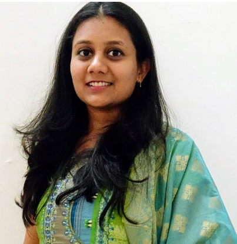

Vrunda Dave
First Runner Up, Beth Outstanding Dissertation Prize (BODP) 2022
Insight had the unique privilege to interview Vrunda Dave, a Ph.D student of Prof S Krishna from the Computer Sciences and Engineering department at IIT Bombay. Vrunda has made history by becoming the first Indian to get their thesis shortlisted for The E.W.Beth Dissertation Prize. Her thesis has been chosen as the runner up for the Beth Outstanding Dissertation Prize (BODP) 2022.
The E.W. Beth Dissertation Prize named in honour of the Dutch Mathematician Evert Willem Beth, is instituted by the Association for Logic, Language and Information (FoLLI) each year, and recognises outstanding PhD thesis in the field of Logic, Language and Information on the basis of their technical depth, strength and originality.The committee, impressed by the breadth, technical depth and novelty of the results in Vrunda's thesis declared her worthy of the title.
-
Can you tell us about your research ideas and how you developed an interest in them?
I did my BTech internship from TCS research Pune in a project related to formal verification. That is when I got introduced to this area and that led me to do course work in formal methods courses when I joined PhD at IITB. I found these courses quite interesting. The professors were also passionate about teaching. I started interacting with a couple of professors in this area, including Prof. Krishna (my PhD advisor). The interactions with my advisor and these courses inspired me to do research in Formal Methods which forms the basis for formal verification.
-
Did you think of the topic yourself or did Professor S. Krishna propose the idea to you? How did you get the idea to do the project on this specific topic?
I had an initial meeting with my advisor, in which she proposed two areas in which she was interested. I parallelly worked in both for some time. I liked the one with my current PhD topic more and continued with the problems in that area. Initial problems to take up for the thesis were suggested by her. Gradually I understood what problems shall be pursued in continuation.
-
Can you tell us about your journey from getting the idea, to writing the thesis to finally being chosen as a runner up for the Beth Outstanding Dissertation Prize (BODP) 2022?
Getting ideas to solve a significant problem, at least from my experience, is not a one day work. It comes as you move forward in the journey by reading more papers, and discussing the ideas with your advisor and collaborators. Many times, our ideas didn’t work out and we had to understand where and why it failed. Based on our new understanding, we remodelled our ideas. This is a constant process in any research.
At the start of a problem, we did literature surveys and tried to understand the related papers in depth. Then we discussed possible ideas and tried to write the details with proof of correctness. Writing ideas on paper and then as soon as we verify, writing it into latex format helped me a lot. This made the ideas clear and precise. In our area, research is mostly about giving new algorithms or proofs. We always tried to give full details to make our papers self explanatory. This also ensured no gaps in understanding. These habits helped me a lot while writing my thesis as I had all the relevant materials prepared.
My advisor Prof.S.Krishna was always positive that our results will have a huge impact since we had managed to solve some fundamental questions. My thesis was lauded by reviewers who are experts in this area. This further reinforced our belief that this thesis is indeed impactful and deserves recognition. This led Prof. Krishna to nominate me for this award and it got chosen as a finalist.
-
What were the major challenges that you faced while writing the thesis and getting it approved?
During my PhD journey, we always worked on at least two problems simultaneously. The idea was, if we get stuck in one, there would be a chance of progress in another one. This way I had four conference papers and one journal paper supporting my thesis by the time I was about to submit my thesis. So I had the results written down in detail. All that remained was about making a uniform abstract, introduction, and dividing these results as chapters of my thesis to build a proper story. I had regular discussions with my advisor about the thesis structure and after a few iterations, it got finalised. My advisor used to review my thesis as I progressed in my writing.
-
How was your experience as a Ph.D. student of IIT Bombay? What significant challenges did you face while writing the thesis and getting it approved? How much time did you take to complete your thesis? Was the time duration according to your expectations?
My experience as a PhD student of IIT Bombay was very enriching. I got to interact with some of the brightest minds in the country. I was quite amazed by the quality of teaching and the depth of knowledge of the professors. Soon I realised they are also down to earth and helpful to students, which increased the respect I already had for them. There were some challenges while solving the problems. In particular, one of the problems we worked on took around two years to solve, and we wrote a really good paper on it. Unfortunately it got rejected from two excellent conferences, in spite of getting excellent reviews. This was an eye opener for me, and I realised that sometimes even though your paper gets great reviews, in the absence of a champion, it may not get in. Another reason for this is that typically conferences have a bound on the number of papers they accept, and some conferences also go through a voting phase in the absence of a champion. The publication got delayed as a result. Finally it got accepted in one of the excellent conferences in my area. On the contrary, another paper got accepted in a flagship venue on the first attempt itself. So these kinds of ups and downs were there. While writing my thesis, for me it helped that I already had work published in peer reviewed conferences. It took me around 3 months to write the thesis, which was according to my expectations.
-
How did it feel to know that your thesis was being considered for the E.W. Beth Dissertation Prize? To not just be the first female, but the first Indian who had been shortlisted for this prestigious award.
It was really amazing news that I got to know from my advisor. At the time, we were extremely excited and jubilant. I want to thank my advisor for her continuous guidance and support throughout the PhD journey, and her efforts to nominate me. I also thank all my wonderful collaborators for our lively discussions. I thank my parents for supporting me in my PhD journey.
-
What are you currently working on?
I am currently working in Intel as a Formal Verification Engineer. I apply techniques I learned through my PhD here and try to find new problems in industry where formal verification can be applied.
-
What is your long-term research goal?
Reading research papers and writing my own has become a passion of mine. I would like to continue that. As per my understanding, there is a gap between industrial applications and academic research in the area of formal verification. My aim is to bridge this gap and spread awareness on the importance of formal verification.
-
Any message you have for Women who are pursuing their career in the field of STEM?
I understand sometimes it is difficult to pursue higher studies for women. If you are passionate enough, go for it. You will find a path and also get support from your family. Choose your advisor wisely. He/she should be someone with whom you can connect at an intellectual and emotional level. Having a good relationship with your advisor is one of the most important factors to do well; your Phd years will be productive and peaceful in this case. Do not underestimate yourselves. If you feel so, talk to your advisor and ask for honest feedback. There can be times when your idea does not work or despite having very good paper, it does not get accepted. My advice to students is not to get demotivated in such situations. Perseverance is a key for doing a PhD. Focus on the process of discussions, reading papers, understanding ideas and going through the details using pen and paper to see if the ideas indeed work. Also keep a good friends’ circle to remain mentally fresh and maintain a work-life balance. Remember the best way to do a PhD is to be disciplined, to keep a good schedule, and to keep a good work life balance. All the very best.
-
What are the current challenges for women in science?
In my understanding, there is definitely social pressure on women when they want to go for higher studies in some places. There is a lot of bias against women that has become ingrained in the system. So, sometimes it is challenging to get appreciation for your work. This field is still hugely male dominated, but thankfully there is more awareness now and we are gradually moving towards equality. One can certainly hope for a better future.